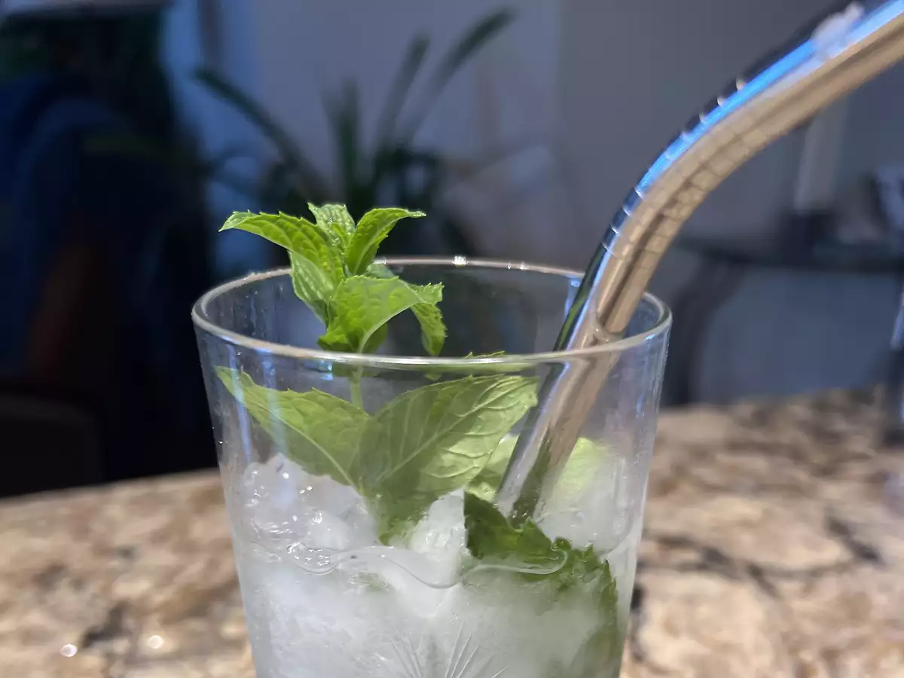

This is an authentic recipe for mojito.
I sized the recipe for one serving,
but you can adjust it accordingly and make a pitcher full.
It's a very refreshing drink for hot summer days.
Be careful when drinking it, however.
If you make a pitcher you might be tempted to drink the whole thing
yourself, and you just might find yourself talking Spanish in no
time!
Ingredients
10 fresh mint leaves
½ medium lime, cut into 3 wedges, divide
2 tablespoons white sugar, or to taste
1 cup ice cubes, or as needed
1½ fluid ounces white rum
½ cup club soda, or as needed
Steps
- Place mint leaves and 1 lime wedge into a sturdy glass. Use a muddler and crush to release mint oils and lime juice.
- Add remaining lime wedges and 2 tablespoons sugar, and muddle again to release the lime juice. Do not strain the mixture.
- Fill the glass almost to the top with ice. Pour in rum and fill the glass with club soda.
- Stir, taste, and add more sugar if desired.
Cook's Note:
Tonic water can be used instead of club soda but the taste will be different and somewhat bitter.
Nutrition Facts
Per Serving: 203 calories; fat 0.1g; sodium 11.4mg; carbohydrates 28.5g; protein 0.2g.